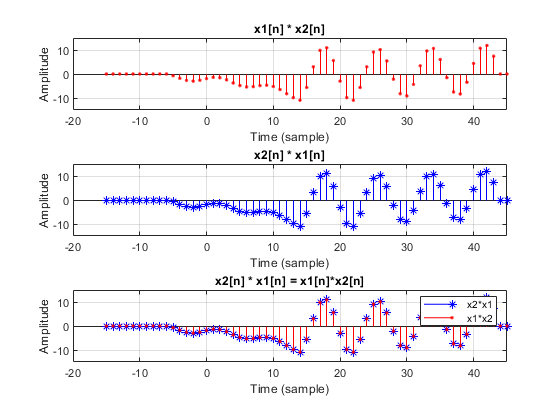
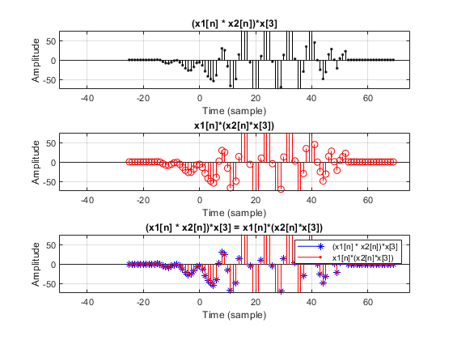
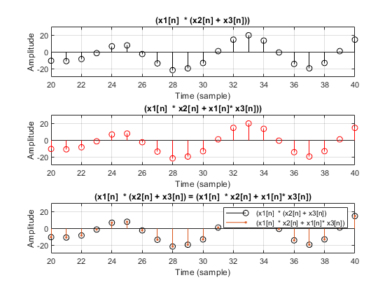
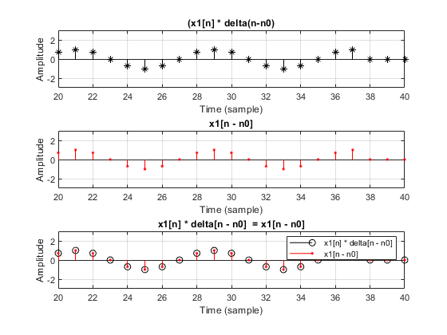

Digital Signal Processing MATLAB HW - q1
Professor: Dr. Sheikhzadeh Author: [SeyedAli] - [SeyedHosseini] E-mail: [alisnake@aut.ac.ir] %which I`m about to change ASAP University: Amirkabir University of Technology
Contents
- Clear recent data
- Verifying By Matlab(Part B)
- Commutative property
- plotting Commutative property
- Association property
- plotting Association property
- Distribution
- Plotting Distribution
- Identity property
- Plotting the Identity
- Func ( Convolution in two dimentions)
- Function Adding two Signals
- Function Step Sequence
- Function : Shiffting signal
- Function delta
Clear recent data
clear; close all; clc;
Verifying By Matlab(Part B)
%define parameters %times n1 = -15:35; n2 = 0:25; n3 = -10:10; %signals x11 = cos(pi*n1 / 4); %cosine part [x12,n12] = stepseq(-5,-15,35); %step plot : u(n+5) [x13,n13] = stepseq(25,-15,35); %step plot : u(n-25) [x14,n14] = sigadd(x12,n12,-x13,n13); %step plot : u(n+5) - u(n-25) x1 = x11.*x14; % x1(n) = cos(pi*n/4) * {u(n+5) - u(n-25)} x21 = 0.9 .^ -n2; %exponential part [x22,n22] = stepseq(0,0,25); %step plot : u(n) [x23,n23] = stepseq(20,0,25); %step plot : u(n-20) x24 = x22 - x23; %step plot : u(n) - u(n-20) x2 = x21.*x24; %x2(n) = (0.9^-n ) * {u(n) - u(n-20)} w = -1 + (1+1)*rand(1,20); %randomly w(n) x3 = round(w.*5); %x(3) = round[5w(n)]
Commutative property
To prove the Commutation property of convolution we must prove that : x1(n)*x2(n) = x2(n)* x1(n) calculate convolution
[yc1,nyc1] = conv_m(x1,n1,x2,n2); %x1(n) * x2(n) [yc2,nyc2] = conv_m(x2,n2,x1,n1); %x2(n) * x1(n) ycdiff = max(abs(yc1 - yc2)); display("y diff is :") display(ycdiff) display("so they are equal")
plotting Commutative property
clc; figure(1); subplot(3, 1, 1); stem(nyc1 , yc1 , 'r.'); grid on; axis([-20 45 -15 15]); title("x1[n] * x2[n]"); xlabel('Time (sample)'); ylabel('Amplitude'); subplot(3, 1, 2); stem(nyc2 , yc2 , 'b*'); grid on; axis([-20 45 -15 15]); title("x2[n] * x1[n]"); xlabel('Time (sample)'); ylabel('Amplitude'); subplot(3, 1, 3); stem(nyc2 , yc2 , 'b*'); hold on; stem(nyc1 , yc1 , 'r.'); grid on; axis([-20 45 -15 15]); title("x2[n] * x1[n] = x1[n]*x2[n]"); xlabel('Time (sample)'); ylabel('Amplitude'); legend('x2*x1','x1*x2')
Association property
To prove the Association property of convolution we must prove that : (x1(n)*x2(n))*x3(n) = x1(n)*(x2(n)*x3(n))
[ya1,nya1] = conv_m(x1,n1,x2,n2); %y1(n) = x1(n) * x2(n) [ya1,nya1] = conv_m(ya1,nya1,x3,n3); %y1(n) = y1(n) * x3(n) = (x1(n) * x2(n))*x3(n) [ya2,nya2] = conv_m(x2,n2,x3,n3); %y2(n) = x2(n) * x3(n) [ya2,nya2] = conv_m(x1,n1,ya2,nya2); %y2(n) = y2(n) * x1(n) = x1(n)*(x2(n) * x3(n)) for associations ydiff2 = max(abs(ya1 - ya2)); display("y_association diff2 is :") display(ydiff2) display("so they are equal")
"y_association diff2 is :"
ydiff2 =
5.6843e-14
"so they are equal"
plotting Association property
figure(2); subplot(3, 1, 1); stem(nya1 , ya1 , 'k.'); grid on; axis([-50 75 -75 75]); title("(x1[n] * x2[n])*x[3]"); xlabel('Time (sample)'); ylabel('Amplitude'); subplot(3, 1, 2); stem(nya2 , ya2 , 'r'); grid on; axis([-50 75 -75 75]); title("x1[n]*(x2[n]*x[3])"); xlabel('Time (sample)'); ylabel('Amplitude'); subplot(3, 1, 3); stem(nya2 , ya2 , 'b*'); hold on; stem(nya1 , ya1 , 'r.'); grid on; axis([-50 75 -75 75]); title("(x1[n] * x2[n])*x[3] = x1[n]*(x2[n]*x[3])"); xlabel('Time (sample)'); ylabel('Amplitude'); legend("(x1[n] * x2[n])*x[3]","x1[n]*(x2[n]*x[3])")
Distribution
clc; x3(end+1 : length(x2)) = 0; y1d = x3 + x2; yd1 = conv(x1,y1d); %yd1 = x1[n] * (x2[n] + x3[n]) yd2 = conv(x1,x2) + conv(x1,x3); %y2d = x1[n]*x2[n] + x1[n]*x3[n] ydiffD2 = max(abs(yd1 - yd2)); display("y_association diff2 is :") display(ydiffD2) display("so they are equal") n3(end+1 : length(yd1)) = 0;
"y_association diff2 is :"
ydiffD2 =
8.8818e-15
"so they are equal"
Plotting Distribution
figure(3); subplot(3, 1, 1); stem( yd1 , 'k'); grid on; axis([20 40 -30 30]); title("(x1[n] * (x2[n] + x3[n]))"); xlabel('Time (sample)'); ylabel('Amplitude'); subplot(3, 1, 2); stem( yd2 , 'r'); grid on; axis([20 40 -30 30]); title("(x1[n] * x2[n] + x1[n]* x3[n]))"); xlabel('Time (sample)'); ylabel('Amplitude'); subplot(3, 1, 3); stem(yd1 , 'k'); hold on; stem(yd2, '.'); grid on; axis([20 40 -30 30]); title("(x1[n] * (x2[n] + x3[n]) = (x1[n] * x2[n] + x1[n]* x3[n])"); xlabel('Time (sample)'); ylabel('Amplitude'); legend("(x1[n] * (x2[n] + x3[n])" ,"(x1[n] * x2[n] + x1[n]* x3[n])")
Identity property
clc; % To prove the Identity property of convolution % (x(n)*delta(n - n0)) = x(n - n0) n0 = ceil(50*rand(1,1)-0.5); [dl,ndl] = impseq(n0,n0,n0); %delta(n - n0) [yI11,nyI11] = conv_m(x1,n1,dl,ndl); % y1 = x1(n) * delta(n- n0) [yI12,nyI12] = sigshift(x1,n1,n0); % y2 = x1(n-n0) yI1diff = max(abs(yI11 - yI12)); display("y_Identity diff2 is :") display(yI1diff) display("As we see, they are equal")
Plotting the Identity
figure(4); subplot(3, 1, 1); stem(nyI11 , yI11 , 'k*'); grid on; axis([20 40 -3 3]); title("(x1[n] * delta(n-n0)"); xlabel('Time (sample)'); ylabel('Amplitude'); subplot(3, 1, 2); stem(nyI12 , yI12 , 'r.'); grid on; axis([20 40 -3 3]); title("x1[n - n0]"); xlabel('Time (sample)'); ylabel('Amplitude'); subplot(3, 1, 3); stem(nyI11 , yI11 , 'k'); hold on; stem(nyI12 , yI12 , 'r.'); grid on; axis([20 40 -3 3]); title("x1[n] * delta[n - n0] = x1[n - n0]"); xlabel('Time (sample)'); ylabel('Amplitude'); legend("x1[n] * delta[n - n0]" ,"x1[n - n0]")
Func ( Convolution in two dimentions)
function [y,ny] = conv_m(x,nx,h,nh) % Modified convolution routine for signal processing % -------------------------------------------------- % [y,ny] = conv_m(x,nx,h,nh) % [y,ny] = convolution result % [x,nx] = first signal % [h,nh] = second signal % nyb = nx(1)+nh(1); %begining point of y(n) nye = nx(length(x)) + nh(length(h)); %end point of y(n) ny = [nyb:nye]; y = conv(x,h); end
"y diff is :"
ycdiff =
0
"so they are equal"
Function Adding two Signals
function [y,n] = sigadd(x1,n1,x2,n2) % implements y(n) = x1(n)+x2(n) % ----------------------------- % [y,n] = sigadd(x1,n1,x2,n2) % y = sum sequence over n, which includes n1 and n2 % x1 = first sequence over n1 % x2 = second sequence over n2 (n2 can be different from n1) % n = min(min(n1),min(n2)):max(max(n1),max(n2)); % duration of y(n) y1 = zeros(1,length(n1)); % initialization y2 =zeros(1,length(n2)); % initialization y1(find((n>=min(n1))&(n<=max(n1))==1))=x1; % x1 with duration of y y2(find((n>=min(n2))&(n<=max(n2))==1))=x2; % x2 with duration of y y = y1+y2; % sequence addition end
Function Step Sequence
function [x,n] = stepseq(n0,n1,n2) % Generates x(n) = u(n-n0); n1 <= n <= n2 % ------------------------------------------ % [x,n] = stepseq(n0,n1,n2) % n = [n1:n2]; x = [(n-n0) >= 0]; end
Function : Shiffting signal
function [y,n] = sigshift(x,m,k) % implements y(n) = x(n-k) % ------------------------- % [y,n] = sigshift(x,m,k) % n = m+k; y = x; end
"y_Identity diff2 is :"
yI1diff =
0
"As we see, they are equal"
Function delta
function [x,n] = impseq(n0,n1,n2) % Generates x(n) = delta(n-n0); n1 <= n <= n2 % ---------------------------------------------- % [x,n] = impseq(n0,n1,n2) % n = [n1:n2]; x = [(n-n0) == 0]; end